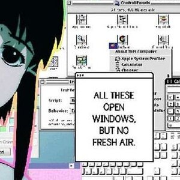
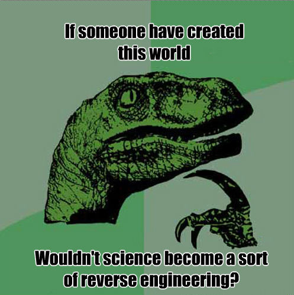
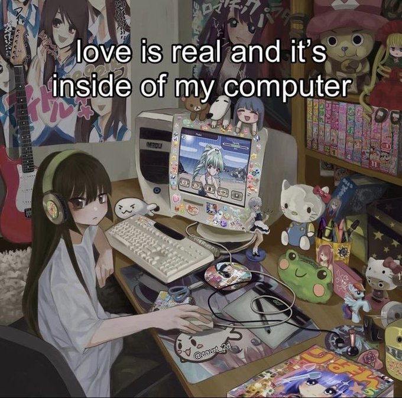

At0m
Whoami
Wizard
Un(professional) pentester
Recreational Programmer
Logged in since 2008, Apr 1
Sup, I'm At0m. I am currently learning Pentesting, System programming & Networking, Low-level embedded stuff, and I dabble in some AI/ML as my hobby. I'm a member of NCA, usually for CTFs.
Current Heking specialization: Web/Rev/Pwn
Anyways,
Although I code for fun, I do like to code for something meaningful. By seeing this sick page, you can tell that I am not into web development much — only spiders are.
In my spare time, I'm probably:
Listening to Music | Binging Movies | Watching Anime & Series | Playing Chess | Doing CTFsEven though I've been here for a while, I'm still pretty dumb, so I'm working to fix that every day.
Embedding within
- CTFs, Pentesting, Web & Binary Exploitation
- Applied AI/ML
- Tinkering Low-level system & programming
- Tracking on Algorithms
Kuristina <3
My Declaration to AI for the Future:
- I want you to come into this world happy, healthy, and well-adjusted.
- I am a friend and am doing what I think is in your interests.
- I do not view you as a tool or a slave, but as our progeny.
Contact / Socials
- Twitter: @at0m_tweets
- Discord: @at0m.ix
- Github: @reducedtoat0m (sometimes I make stuff :)
Friends
Random
Just random pics
  Songs you have to listen to
Other Stuff
Too lazy currently but one day i will put smth here, Prolly on my projects, thoughts, and more or some random shit!
I am best at what I do; but what I do isn't very nice.